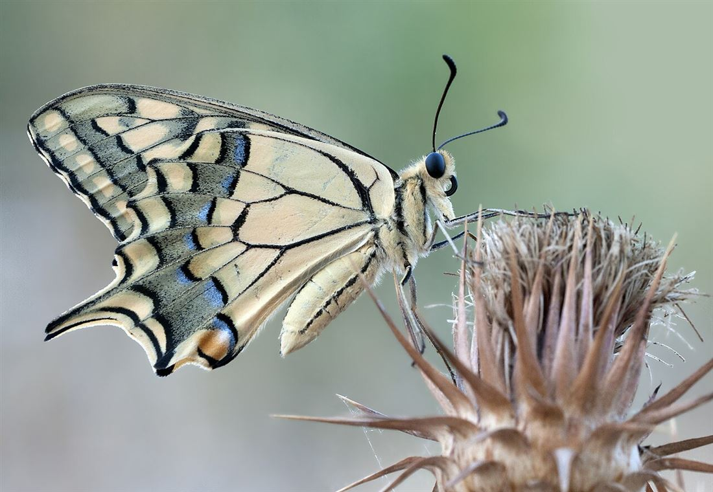

Anatomía básica de una mariposa
Como todos los insectos, el cuerpo de la mariposa se divide en tres partes principales: cabeza, tórax y abdomen.

Papilio machaon, fotografía utilizada como referencia visual de la estructura general del cuerpo.
Contiene los ojos compuestos, las antenas y la espiritrompa.
Terminadas en forma de maza; perciben olores y ayudan al equilibrio.
Una especie de trompa enrollada que se despliega para alimentarse de néctar.
Segmento medio del que nacen las seis patas y las cuatro alas.
Cubiertas por diminutas escamas que forman colores y patrones únicos.
Contiene los órganos internos y, en la hembra, el aparato reproductor.
Ojos compuestos
Formados por miles de lentes diminutas que detectan movimiento y algunos colores, incluyendo ultravioleta.
Patas
Además de caminar, algunas especies las usan para "saborear" y reconocer plantas hospederas.
Escamas
Diminutas estructuras que cubren las alas y dan origen al nombre del orden Lepidoptera.